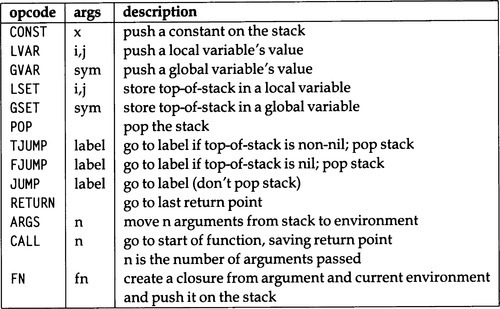
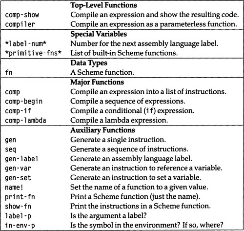
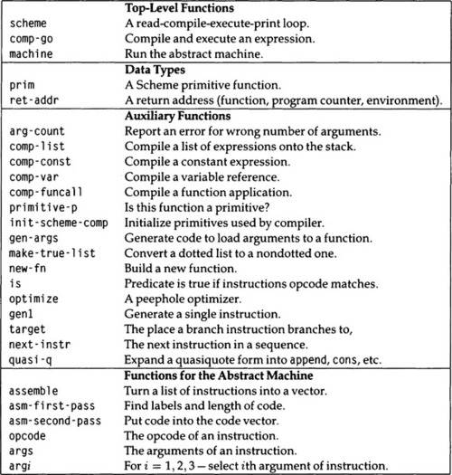

|
paip-ru
1
|
Во многих учебниках показаны простые интерпретаторы Лиспа, потому что они просты в написании и потому, что полезно знать, как работает интерпретатор. К сожалению, не так много учебников показывают, как писать компилятор, хотя по тем же двум причинам. Самый простой компилятор не должен быть намного сложнее интерпретатора.
Одна вещь, которая делает компилятор более сложным, заключается в том, что мы должны описывать вывод компилятора: набор инструкций машины, для которой мы компилируем. На данный момент давайте предположим, что это машина на основе стека. Последовательность вызова на этом компьютере для вызова функции с n аргументами состоит в том, чтобы поместить n аргументов в стек, а затем поместить туда функцию, которая будет вызвана. Инструкция "CALL *n*" сохраняет точку возврата в стеке и переходит к первой инструкции вызываемой функции. По соглашению, первая инструкция функции всегда будет "ARGS *n*", которая выталкивает n аргументов из стека, помещая их в окружающую среду новой функции, где к ним могут получить доступ инструкции LVAR и LSET. Функция должна возвращаться с инструкцией RETURN, которая сбрасывает счетчик программы и окружение до точки исходной инструкции CALL.
Кроме того, наша машина имеет три инструкции JUMP; одна, переходящая безусловно, и две, которые выполняют переход в зависимости от того, является ли вершина стека нулевой или ненулевой. Также есть инструкция для удаления ненужных значений из стека, а также для доступа и изменения глобальных переменных. Набор команд показан на рисунке 23.1. Словарь для программы компилятора приведен на рисунке 23.2. Краткое описание более сложной версии компилятора приведено на страница 795.
| []() |
|---|

|
| Рисунок 23.1: Набор Инструкций для гипотетической Стековой Машины |
*(ed: should be a markdown table)*
| []() |
|---|

|
| Figure 23.2: Glossary for the Scheme Compiler |
*(ed: should be a markdown table)*
Например, процедура
должна скомпилироваться в следующие инструкции:
| []() | ||
|---|---|---|
ARGS | 0 | |
GVAR | X | |
GVAR | Y | |
GVAR | = | |
CALL | 2 | |
FJUMP | L1 | |
GVAR | X | |
GVAR | G | |
CALL | 1 | |
GVAR | F | |
CALL | 1 | |
JUMP | L2 | |
L1: | GVAR | X |
GVAR | Y | |
CONST | 1 | |
CONST | 2 | |
GVAR | H | |
CALL | 2 | |
GVAR | H | |
CALL | 3 | |
L2: | RETURN |
Первая версия компилятора Scheme довольно проста. Он имитирует структуру вычислителя(evaluator) Scheme. Разница в том, что каждый случай генерирует код, а не вычисляет подвыражения:
Компилятор comp имеет те же девять вариантов - фактически ту же самую структуру - что и интерпретатор interp из главы 22. Каждый случай немного сложнее, поэтому три основных случая были разделены на отдельные функции: comp-begin, comp-if и comp-lambda. Выражение begin компилируется путем компиляции каждого аргумента по очереди, но обязательно выталкивает каждое значение, кроме последнего, из стека после его вычисления. Последний элемент в begin остается в стеке как значение всего выражения. Обратите внимание, что функция gen генерирует одну инструкцию (фактически список из одной инструкции), а seq создает последовательность инструкций из двух или более подпоследовательностей.
Выражение if компилируется путем компиляции предиката, части then(затем) и части иначе(else), а также путем вставки соответствующих инструкций ветвления.
Наконец, lambda- выражение компилируется путем компиляции тела, окружая его одной инструкцией для установки аргументов и другой для возврата из функции, а затем сохраняя полученный скомпилированный код вместе с окружающей средой(environment). Тип данных fn реализован в виде структуры со слотами для тела кода, списка аргументов и имени функции (только для целей печати).
Преимущество компиляции перед интерпретацией состоит в том, что многое можно решить во время компиляции. Например, компилятор может определить, относится ли ссылка к глобальной переменной или к лексической переменной, и если это ссылка на лексическую переменную, где именно эта лексическая переменная хранится. Это вычисление выполняется компилятором только один раз, но оно должно выполняться каждый раз, когда выражение встречается в интерпретаторе. Точно так же компилятор может подсчитать количество аргументов раз и навсегда, в то время как интерпретатор должен пройти цикл, подсчитывая количество аргументов и проверяя конец аргументов после интерпретации каждого из них.
Еще одно преимущество состоит в том, что компилятор может быть более надежным. Например, в comp-lambda мы проверяем, что список параметров лямбда-выражения является списком, содержащим только символы. Было бы слишком дорого делать такие проверки в интерпретаторе, но в компиляторе стоит проверить один раз во время компиляции на наличие условий ошибки, а не повторно проверять во время выполнения.
Прежде чем мы покажем остальную часть компилятора, вот полезный интерфейс верхнего уровня для comp:
Теперь вот код для генерации отдельных инструкций и последовательностей инструкций. Последовательность инструкций - это просто список, но мы предоставляем функцию seq вместо того, чтобы напрямую использовать append для целей абстракции данных. label - это просто атом.
Окружающие среды теперь представлены в виде списков кадров(frames), где каждый кадр представляет собой последовательность переменных. На локальные переменные ссылаются не по их имени, а по двум целым числам: индекс в списке фреймов и индекс в отдельном фрейме. Как обычно, индексы отсчитываются от нуля. Например, данный код:
самая внутренняя окружающая среда - это ((e f) (c d) (a b)). Функция in-env-p проверяет, появляется ли переменная в среде. Если бы эта среда была названа env, то (in-env-p 'f env) вернула бы (0 1), а `(in-env-p' x env)вернула быnil`.
Наконец, у нас есть несколько вспомогательных функций для распечатки результатов, для различения меток и инструкций и для определения индекса переменной в среде. Функции Scheme теперь реализованы в виде структур, которые должны иметь поле для кода и поле для окружающей среды. Кроме того, мы предоставляем поле для имени функции и для списка аргументов; они используются только для целей отладки. Мы примем соглашение, согласно которому макрос define устанавливает поле имени функции, вызывая name! (которая не является частью стандартной схемы).
Теперь мы готовы показать компилятор в работе:
| []() | ||
|---|---|---|
ARGS | 0 | |
GVAR | X | |
GVAR | Y | |
GVAR | = | |
CALL | 2 | |
FJUMP | L1 | |
GVAR | X | |
GVAR | G | |
CALL | 1 | |
GVAR | F | |
CALL | 1 | |
JUMP | L2 | |
L1: | GVAR | X |
GVAR | Y | |
CONST | 1 | |
CONST | 2 | |
GVAR | H | |
CALL | 2 | |
GVAR | H | |
CALL | 3 | |
L2: | RETURN |
Этот пример должен дать читателю представление о коде, созданном компилятором.
Другая причина, по которой компилятор имеет преимущество перед интерпретатором, заключается в том, что компилятор может позволить себе потратить некоторое время на попытки найти более эффективное кодирование выражения, в то время как для интерпретатора накладные расходы на поиск более эффективной интерпретации обычно сводят на нет любое полученное преимущество. . Вот несколько мест, где компилятор мог бы работать лучше, чем интерпретатор (хотя наш компилятор в настоящее время этого не делает):
| []() | ||
|---|---|---|
ARGS | 0 | |
CONST | doc | |
POP | ||
GVAR | X | |
GVAR | WRITE | |
CALL | 1 | |
POP | ||
GVAR | Y | |
RETURN |
В этом примере генерируется код, который помещает константу "doc" в стек, а затем немедленно удаляет ее. Если у нас есть компилятор, отслеживающий, какие выражения компилируются "для значения" - поскольку y - это значение выражения выше - и какие компилируются только "для эффекта", то мы можем вообще избежать генерации кода для ссылки на константы или переменные для эффекта. Вот еще пример:
| []() | |
|---|---|
ARGS | 0 |
GVAR | A |
GVAR | X |
GVAR | * |
CALL | 2 |
GVAR | X |
GVAR | F |
CALL | 1 |
GVAR | + |
CALL | 2 |
POP | |
GVAR | X |
RETURN |
В этом выражении, если мы можем быть уверены, что + и * относятся к обычным арифметическим функциям, то мы можем скомпилировать его, как если бы это было (begin (f x) x). Более того, разумно предположить, что + и * будут инструкциями на нашей машине, которые можно выполнить непосредственно, а не вызывать функцию. Многие компиляторы тратят значительную часть своего времени на оптимизацию арифметических операций, принимая во внимание ассоциативность, коммутативность, распределительность и другие свойства.
Помимо арифметики, компиляторы часто проводят экспертизу в условных выражениях. Рассмотреть следующее:
| []() | ||
|---|---|---|
ARGS | 0 | |
GVAR | P | |
FJUMP | L3 | |
GVAR | Q | |
JUMP | L4 | |
L3: | GVAR | NIL |
L4: | FJUMP | L1 |
GVAR | X | |
JUMP | L2 | |
L1: | GVAR | Y |
L2: | RETURN |
Обратите внимание, что (and p q) макро-расширяется до (if p q nil). Полученный скомпилированный код корректен, но неэффективен. Во-первых, существует безусловный переход к L4, который обозначает условный переход к L1. Это можно было бы заменить условным переходом к L1. Во-вторых, на L3 мы загружаем NIL, а затем переходим при nil к L1. Эти две инструкции могут быть заменены безусловным переходом к L1. В-третьих, FJUMP к L3 можно заменить на FJUMP к L1, так как теперь мы знаем, что код в L3 безоговорочно переходит к L1.
Наконец, некоторые компиляторы, особенно компиляторы Lisp, проводят экспертизу вызова функций. Рассмотреть следующее:
| []() | ||
|---|---|---|
ARGS | 0 | |
GVAR | X | |
GVAR | Y | |
GVAR | G | |
CALL | 2 | |
GVAR | F | |
CALL | 1 | |
RETURN |
Здесь мы вызываем g и когда g возвращается мы вызываем f , а когда f возвращаеся мы вернемся из этой функции. Но это последнее возвращение является расточительным; мы помещаем адрес возврата в стек, а затем убираем его и возвращаемся к следующему адресу возврата. Альтернативный протокол вызова функции включает в себя помещение в стек адреса возврата перед вызовом g, но затем не помещать в стек адрес возврата перед вызовом f; когда f возвращается, он вернется непосредственно к вызывающей функции, какой бы она ни была.
Такая оптимизация выглядит небольшим выигрышем; мы в основном исключаем единственную инструкцию. Фактически, последствия этого нового протокола огромны: теперь мы можем вызывать рекурсивную функцию до произвольной глубины без увеличения стека вообще - до тех пор, пока рекурсивный вызов является последним оператором в функции (или в ветви функция, когда есть условные выражения). Функция, которая подчиняется этому ограничению на свои рекурсивные вызовы, известна как правильная хвосто- рекурсивная функция. Эта тема обсуждалась в разделе 22.3.
До сих пор все примеры касались только глобальных переменных. Вот пример использования локальных переменных:
| []() | ||||||
|---|---|---|---|---|---|---|
ARGS | 0 | |||||
CONST | 4 | |||||
FN | ||||||
ARGS | 1 | |||||
CONST | 3 | |||||
LVAR | 0 | 0 | ; | X | ||
FN | ||||||
ARGS | 2 | |||||
LVAR | 1 | 0 | ; | X | ||
LVAR | 0 | 0 | ; | Y | ||
LVAR | 0 | 1 | ; | Z | ||
GVAR | F | |||||
CALL | 3 | |||||
RETURN | ||||||
CALL | 2 | |||||
RETURN | ||||||
CALL | 1 | |||||
RETURN |
Код имеет отступ для отображения вложенных функций. Функция верхнего уровня загружает константу 4 и анонимную функцию и вызывает функцию. Эта функция загружает константу 3 и локальную переменную x, которая является первым (0-м) элементом в верхнем (0-м) кадре. Затем он вызывает функцию с двойной вложенностью для этих двух аргументов. Эта функция загружает x, y, и z: x теперь является 0-м элементом следующего (первого) кадра, а y и z являются 0-м и 1-м элементами верхнего кадра. Со всеми аргументами, наконец, вызывается функция f. Обратите внимание, что никакие продолжения не сохраняются - f может возвращаться непосредственно вызывающей эту функцию стороне.
Однако все эти явные манипуляции с окружением неэффективны; в этом случае мы могли бы скомпилировать все, просто поместив 4, 3 и 4 в стек и вызвав f.
В этом разделе мы описываем новую версию компилятора, сначала показывая примеры его вывода, а затем исследуя сам компилятор, который кратко описан на рис. 23.3. В новой версии компилятора также используется другая последовательность вызова функций с использованием двух новых инструкций, CALLJ и SAVE. Как следует из названия, SAVE сохраняет адрес возврата в стеке. Инструкция CALLJ больше ничего не сохраняет; её можно рассматривать как безусловный переход - отсюда и буква J в её названии.
| []() |
|---|

|
| Figure 23.3: Glossary of the Scheme Compiler, Second Version |
*(ed: should be a markdown table)*
Сначала мы посмотрим, как работают вызовы вложенных функций:
| []() | ||
|---|---|---|
ARGS | 0 | |
SAVE | K1 | |
GVAR | X | |
GVAR | G | |
CALLJ | 1 | |
K1: | GVAR | F |
CALLJ | 1 |
Точка продолжения K1 сохраняется, чтобы g мог вернуться к ней, но тогда продолжение для f не сохраняется, поэтому f возвращается к любому продолжению, находящемуся в стеке. Таким образом, нет необходимости в явной инструкции RETURN. Последний CALL подобен безусловному переходу.
В следующем примере показано, что все функции, кроме последней (f), нуждаются в точке продолжения:
| []() | ||
|---|---|---|
ARGS | 0 | |
SAVE | K1 | |
SAVE | K2 | |
GVAR | X | |
GVAR | H | |
CALLJ | 1 | |
K2: | SAVE | K3 |
GVAR | Y | |
GVAR | H | |
CALLJ | 1 | |
K3: | GVAR | G |
CALLJ | 2 | |
K1: | GVAR | F |
CALLJ | 1 |
Этот код сначала вычисляет (h x) и возвращается к K2. Затем он вычисляет (h y) и возвращается к K3. Затем он вызывает g для этих двух значений и возвращается к K1 перед переходом к f. Поскольку все, что возвращает f, также будет окончательным значением функции, которую мы компилируем, нет необходимости сохранять точку продолжения для возврата f.
В следующем примере мы видим, что ненужные константы и переменные в выражениях begin игнорируются:
| []() | ||
|---|---|---|
ARGS | 0 | |
SAVE | K1 | |
GVAR | X | |
GVAR | F | |
CALLJ | 1 | |
K1: | POP | |
GVAR | Y | |
RETURN |
Одним из основных недостатков первой версии компилятора является то, что она могла передавать данные, но на самом деле она не могла ничего делать с объектами данных. Мы исправляем эту проблему, дополнив машину инструкциями для выполнения арифметических и других примитивных операций. Ненужные примитивные операции, такие как переменные, константы и арифметические операции, игнорируются, когда они находятся в нефинальной позиции в пределах begin. Сравните два следующих выражения:
| []() | ||
|---|---|---|
ARGS | 0 | |
SAVE | K1 | |
GVAR | X | |
GVAR | F | |
CALLJ | 1 | |
K1: | POP | |
GVAR | X | |
RETURN |
| `> (comp-show '(begin (+ (* a x) (f x))))` |
| []() | ||
|---|---|---|
ARGS | 0 | |
GVAR | A | |
GVAR | X | |
* | ||
SAVE | K1 | |
GVAR | X | |
GVAR | F | |
CALLJ | 1 | |
K1: | + | |
RETURN |
Первая версия компилятора была контекстно-свободной в том смысле, что она эквивалентно компилировала все эквивалентные выражения, независимо от того, где они появились. Компилятор с правильной хвостовой рекурсией должен быть контекстно-зависимым: он должен компилировать вызов, который является конечным значением функции, иначе, чем вызов, который используется в качестве промежуточного значения или значение которого игнорируется. В первой версии компилятора comp-lambda отвечал за генерацию инструкции RETURN, и весь код в конечном итоге достигал этой инструкции. Чтобы убедиться, что RETURN был достигнут, код для двух ветвей выражения if должен был воссоединиться в конце.
В компиляторе с хвостовой рекурсией каждый фрагмент кода отвечает за вставку собственной инструкции RETURN или неявный возврат путем вызова другой функции без сохранения точки продолжения.
Мы отслеживаем эти возможности с помощью двух флагов. Параметр val? истинен, когда выражение, которое мы компилируем, возвращает значение, которое используется в другом месте. Параметр more? является ложным, когда выражение представляет окончательное значение, и истинным, когда необходимо еще вычислять. Таким образом, есть три возможности:
val? | more? | example: the X in: |
|---|---|---|
| true | true | (if X y z)*or*(f X y) |
| true | false | (if p X z)*or*(begin y X) |
| false | true | (begin X y) |
| false | false | impossible |
Код для компилятора, использующего эти соглашения, следующий:
Здесь мы добавили еще один случай: t и nil компилируются непосредственно в примитивные инструкции, а не полагаются на их привязку как глобальные переменные. (В реальной Scheme логические значения - это # t и #f, которые не нужно заключать в кавычки, пустой список - это (), который должен быть заключен в кавычки, а t и nil - обычные символы. без особого значения.)
Я также добавил проверку на ошибки количества аргументов, передаваемых в quote, set! и if. Обратите внимание, что в компиляторе разумно выполнять больше проверок ошибок, чем в интерпретаторе, поскольку проверка должна выполняться только один раз, а не каждый раз. Функция проверки аргументов следующая:
Exercise 23.1 [m] Измените компилятор, чтобы проверить наличие дополнительных ошибок времени компиляции, совершенных следующим ошибочным выражением:
Хвостово-рекурсивный компилятор по-прежнему имеет девять известных случаев, но я ввел comp-var, comp-const, comp-if и comp-funcall, чтобы справиться с повышенной сложностью, вызванной параметрами var? и more?.
Давайте рассмотрим функции comp- по очереди. Во-первых, comp-begin и comp-list просто обрабатывают и передают дополнительные параметры. comp-list будет использоваться в comp-funcall, новой функции, которая будет введена для компиляции применения процедуры.
Затем есть две тривиальные функции для компиляции доступа к переменным и константам. Если значение не требуется, они не производят никаких инструкций вообще. Если больше ничего не нужно делать, то эти функции должны генерировать инструкцию возврата. Это изменение по сравнению с предыдущей версией comp, где вызывающий генерировал инструкцию возврата. Обратите внимание, что я расширил машину, чтобы включить инструкции для наиболее распространенных констант: t, nil и некоторых небольших целых чисел.
Оставшиеся две функции более сложны. Сначала рассмотрим comp-if. Вместо того чтобы слепо генерировать код для предиката и обеих ветвей, мы рассмотрим некоторые частные случаи(case). Во-первых, ясно, что (if t x y) можно свести к x и (if nil x y) можно свести к y. Возможно, не так очевидно, что (if p x x) может быть сведено к (begin p x), или что сравнение equality на равенство между двумя ветвями должно выполняться на объектном коде, а не на исходном коде. Когда эти тривиальные частные случаи были рассмотрены, у нас осталось еще три случая: (if р х nil), (if p nil y) и (if p x y). Шаблон меток и переходов для каждого из них различен.
Вот несколько примеров выражений типа if. Во-первых, очень простой пример:
| []() | ||
|---|---|---|
ARGS | 0 | |
GVAR | P | |
FJUMP | L1 | |
GVAR | X | |
GVAR | Y | |
+ | ||
RETURN | ||
L1 : | GVAR | X |
GVAR | Y | |
* | ||
RETURN |
Каждая ветвь имеет свою собственную инструкцию RETURN. Но обратите внимание, что генерируемый код чувствителен к его контексту. Например, если мы поместим одно и то же выражение в выражение begin, мы получим нечто совершенно другое:
| []() | ||
|---|---|---|
ARGS | 0 | |
GVAR | Z | |
RETURN |
Здесь происходит то, что (+ x y) и (* x y), скомпилированные в контексте, где значение игнорируется, оба повторяются в не генерируемом коде. Таким образом, if выражение сводится к (if p nil nil), который компирируется как (begin p nil), который также не генерирует никакого кода, когда не вычисляется для значения, поэтому окончательный код просто ссылается на z. Компилятор может выполнить эту оптимизацию только потому, что он знает, что + и * -это операции без побочных эффектов. Рассмотрим, что происходит, когда мы заменяем + на f:
| []() | ||
|---|---|---|
ARGS | 0 | |
GVAR | P | |
FJUMP | L2 | |
SAVE | K1 | |
GVAR | X | |
GVAR | F | |
CALLJ | 1 | |
K1: | POP | |
L2: | GVAR | Z |
RETURN |
Здесь мы имеем вызов (f x) если p равно истине (а затем выбросывающий возвращенное значение), но нам не нужно вычислять (* x x), когда p ложно
Эти примеры непреднамеренно выявили некоторую структуру comp-funcall, которая обрабатывает пять случаев. Во-первых, она знает некоторые примитивные функции, которые имеют соответствующие инструкции, и компилирует эти инструкции встраиваемыми, когда необходимы их значения. Если значения не нужны, то функция может быть проигнорирована, и только аргументы могут быть скомпилированы. Это предполагает истинные функции без каких-либо побочных эффектов. Если есть примитивные операции с побочными эффектами, они тоже могут быть скомпилированы встроенно, но эта операция никогда не может быть проигнорирована. Следующий случай - это когда функция является лямбда-выражением без аргументов. Мы можем просто скомпилировать тело лямбда-выражения, как если бы это было выражение begin. Непримитивные функции требуют вызова функции. Есть два случая: когда нужно скомпилировать больше, мы должны сохранить точку продолжения, и когда мы компилируем конечное значение функции, мы можем просто ответвляться(переходить) на вызываемую функцию. Все это выглядит примерно так:
Поддержка примитивов проста. Тип данных prim имеет пять слотов. Первый содержит имя символа, глобально связанного с примитивной операцией. Второй, n-args, - это число аргументов, требующихся примитиву. Мы должны учитывать количество аргументов для каждой функции, потому что мы хотим, чтобы (+ x y) компилировалась в примитивную инструкцию сложения, в то время как (+ x y z) нет. Вместо этого она будет компилироваться в вызов функции +. Слот opcode дает код операции, который используется для реализации примитива. Поле always истинно, если примитив всегда возвращает не-nil значение, ложно, если оно всегда возвращает nil, и nil в противном случае. Оно используется в упражнении 23.6. Наконец, поле side-effects указывает, есть ли у функции какие-либо побочные эффекты, такие как выполнение ввода-вывода или изменение значения объекта.
Эти оптимизации работают только в том случае, если символы постоянно привязаны к глобальным значениям, приведенным здесь. Мы можем обеспечить это, изменив gen-set, чтобы сохранить их как константы:
Теперь выражение типа (+ x 1) будет правильно скомпилировано с использованием инструкции +, а не вызова подпрограммы, и выражение типа (set ! + *) будет помечено как ошибка, если + является глобальной переменной, но разрешено, если он был локально привязан. Однако нам все еще нужно уметь обрабатывать такие выражения, как (set! add +), а затем (add x y). Таким образом, нам нужен некоторый объект функции, к которому + будет глобально привязан, даже если компилятор обычно оптимизирует ссылки на эту функцию. Функция init-scheme-comp заботится об этом требовании:
Нужно внести еще одно изменение - переписать comp-lambda. Нам все еще нужно извлечь аргументы из стека, но мы больше не генерируем инструкцию RETURN, так как это делается comp-begin, если это необходимо. На этом этапе мы предоставим hook для подсматривающего(peephole) оптимизатора, который будет представлен в разделе 23.4, и для ассемблера, чтобы преобразовать язык ассемблера в машинный код, new-fn предоставляет этот интерфейс, но пока new-fn действует точно так же, как make-fn.
Мы также должны учитывать возможность rest аргументов в лямбда-списке. Новая функция, gen-rgs, генерирует единственную инструкцию для загрузки аргументов стека. Она вводит новую инструкцию, ARGS., в абстрактную машину. Эта инструкция работает точно так же, как ARGS, за исключением того, что она также сохраняет все оставшиеся в стеке аргументы в список и сохраняет этот список как значение аргумента rest. С этим нововведением новая версия comp-lambda выглядит следующим образом:
new-fn включает вызовы ассемблера и оптимизатора для генерации фактического машинного кода. На данный момент обе функции будут идентичными:
Вот еще несколько примеров работы компилятора:
| []() | |||
|---|---|---|---|
ARGS | 0 | ||
GVAR | L | ||
CAR | |||
FJUMP | L1 | ||
GVAR | X | ||
2 | |||
| / | |||
GVAR | G | ||
CALLJ | 1 | ||
L1: | GVAR | A | |
GVAR | X | ||
* | |||
GVAR | B | ||
+ | |||
GVAR | F | ||
CALLJ | 1 |
В этом коде нет необходимости сохранять какие-либо точки продолжения, поскольку единственные вызовы непримитивных функций происходят как конечные значения двух ветвей функции.
(if (null? (cdr l)) (car l)
| []() | ||||||
|---|---|---|---|---|---|---|
ARGS | 0 | |||||
FN | ||||||
ARGS | 1 | |||||
LVAR | 0 | 0 | ; | L | ||
CDR | ||||||
FJUMP | L1 | |||||
LVAR | 0 | 0 | ; | L | ||
CDR | ||||||
GVAR | LAST1 | |||||
CALLJ | 1 | |||||
L1: | LVAR | 0 | 0 | ; | L | |
CAR | ||||||
RETURN | ||||||
GSET | LAST1 | |||||
CONST | LAST1 | |||||
NAME! | ||||||
RETURN |
Функция верхнего уровня просто присваивает вложенную функцию глобальной переменной last1. Поскольку last1 является хвосто-рекурсивной, она имеет только одну точку возврата для случая завершения и просто вызывает себя без сохранения продолжений до тех пор, пока этот случай не будет выполнен.
Сравните это с приведенным ниже не хвосто-рекурсивным определением length. Она не является хвостово-рекурсивной, потому что перед рекурсивным вызовом length она должна сохранить точку продолжения, K1, чтобы знать, куда вернуться, чтобы добавить 1.
(if (null? l) 0 (+ 1 (length (cdr l))))))
| []() | ||||||
|---|---|---|---|---|---|---|
ARGS | 0 | |||||
FN | ||||||
ARGS | 1 | |||||
LVAR | 0 | 0 | ; | L | ||
FJUMP | L2 | |||||
1 | ||||||
SAVE | K1 | |||||
LVAR | 0 | 0 | ; | L | ||
CDR | ||||||
GVAR | LENGTH | |||||
CALLJ | 1 | |||||
K1: | + | |||||
RETURN | ||||||
L2 | 0 | |||||
RETURN | ||||||
GSET | LENGTH | |||||
CONST | LENGTH | |||||
NAME! | ||||||
RETURN |
Конечно, можно написать length в хвостовой рекурсивной манере:
(if (null? l) n
| []() | ||||||||
|---|---|---|---|---|---|---|---|---|
ARGS | 0 | |||||||
FN | ||||||||
ARGS | 1 | |||||||
NIL | ||||||||
FN | ||||||||
ARGS | 1 | |||||||
FN | ||||||||
ARGS | 2 | |||||||
LVAR | 0 | 0 | ; | L | ||||
FJUMP | L2 | |||||||
SAVE | K1 | |||||||
LVAR | 0 | 0 | ; | L | ||||
GVAR | REST | |||||||
CALLJ | 1 | |||||||
K1: | LVAR | 0 | 1 | ; | N | |||
1 | ||||||||
+ | ||||||||
LVAR | 1 | 0 | ; | LEN | ||||
CALLJ | 2 | |||||||
L2: | LVAR | 0 | 1 | ; | N | |||
RETURN | ||||||||
LSET | 0 | 0 | ; | LEN | ||||
POP | ||||||||
LVAR | 1 | 0 | ; | L | ||||
0 | ||||||||
LVAR | 0 | 0 | ; | LEN | ||||
CALLJ | 2 | |||||||
CALLJ | 1 | |||||||
GSET | LENGTH | |||||||
CONST | LENGTH | |||||||
NAME! | ||||||||
RETURN |
Давайте еще раз рассмотрим пример с вложенными условными обозначениями:
| []() | ||
|---|---|---|
ARGS | 0 | |
GVAR | P | |
FJUMP | L3 | |
GVAR | Q | |
FJUMP | L1 | |
GVAR | R | |
NOT | ||
JUMP | L2 | |
L1: | NIL | |
L2: | JUMP | L4 |
L3: | NIL | |
L4: | FJUMP | L5 |
GVAR | Y | |
RETURN | ||
L5: | GVAR | X |
RETURN |
Здесь проблема заключается в множественном JUMP и в нераспознавании отрицания. Если p ложно, то выражение and ложно, а весь предикат истинен, поэтому мы должны вернуть x. Код делает на самом деле возврат х, но сначала он прыгает на L3, загружает NIL, а затем делает FJUMP, который всегда будет прыгать на L5. Другие ветви обладают аналогичной неэффективностью. Достаточно умный компилятор должен уметь генерировать следующий код:
| []() | ||
|---|---|---|
ARGS | 0 | |
GVAR | P | |
FJUMP | L1 | |
GVAR | Q | |
FJUMP | L1 | |
GVAR | R | |
TJUMP | L1 | |
GVAR | Y | |
RETURN | ||
L1: | GVAR X | |
RETURN |
Теперь, когда базовый компилятор работает, мы можем подумать о том, как реализовать call/cc в нашем компиляторе. Во-первых, помните, что call/cc - это нормальная(обычная) функция, а не специальная форма. Таким образом, мы могли бы определить её как примитивную, на манер car и cons. Однако примитивы в том виде, в каком они были определены, могут видеть только свои аргументы, а call/cc должна будет видеть стек времени выполнения, чтобы сохранить текущее продолжение. Один из вариантов - установить call/cc как обычную Непримитивную функцию Scheme, но написать ее тело в ассемблерном коде самостоятельно. Нам нужно ввести одну новую инструкцию, CC, которая помещает в стек функцию (к которой мы также должны написать ассемблерный код вручную), которая сохраняет текущее продолжение (стек) в своей среде окружения и при вызове извлекает это продолжение и устанавливает его, возвращая стеку это значение. Для этого требуется еще одна инструкция, SET-CC. Подробности этой и всех других инструкций раскрываются в следующем разделе.
До сих пор мы определяли набор команд мифической абстрактной машины и генерировали ассемблерный код для этого набора команд. Теперь пришло время фактически выполнить ассемблерный код и, следовательно, иметь полезный компилятор. Есть несколько путей, которые мы могли бы использовать: мы могли бы реализовать машину в аппаратном, программном обеспечении или микрокоде, или мы могли бы перевести ассемблерный код для нашей абстрактной машины в ассемблерный код какой-либо существующей машины. Каждый из этих подходов уже применялся в прошлом.
Железо. *Если абстрактная машина достаточно проста, она может быть реализована непосредственно в аппаратном обеспечении. Чипы Scheme-79 и Scheme-81 (Стилл и Sussman 1980; Batali et al. 1982) были СБИС-реализациями машины, разработанной специально для запуска Scheme.(B9780080571157500285.xhtml::bb1180);
Макроассемблер. в подходе трансляции или макроассемблера каждая инструкция на абстрактном машинном языке переводится в одну или несколько инструкций в наборе команд целевого компьютера. Это может быть сделано либо непосредственно, либо путем генерации кода сборки и передачи его ассемблеру целевого компьютера. В общем случае это приведет к расширению кода, поскольку целевой компьютер, вероятно, не будет обеспечивать прямую поддержку типов данных схемы. Таким образом, в то время как в нашей абстрактной машине мы могли бы написать одну инструкцию для сложения, с машинным кодом нам, возможно, придется выполнить серию инструкций, чтобы проверить тип аргументов, сделать целочисленное сложение, если они оба являются целыми числами, сложение с плавающей запятой, если они оба являются числами с плавающей запятой, и так далее. Возможно, нам также придется проверить результат на переполнение и, возможно, преобразовать его в представление bignum. Компиляторы, генерирующие машинный код, часто включают более сложный анализ потока данных, чтобы знать, когда такие проверки необходимы, а когда их можно пропустить.
Микрокод. проект MIT Lisp Machine, в отличие от чипов Scheme, фактически привел к рабочим машинам. Одним из важных решений было использование микрокода вместо одиночного чипа. Это позволило легко изменить систему по мере накопления опыта, а также по мере изменения языка хоста с ZetaLisp на Common Lisp. Наиболее важной архитектурной особенностью Lisp машины было включение битов тегов в каждое слово для указания типов данных. Также важным был микрокод для реализации некоторых часто используемых универсальных операций. Например, в Lisp машине Symbolics 3600 микрокод для сложения одновременно выполнял сложение целого числа, сложение с плавающей запятой и проверку битов тега. Если оба аргумента оказывались либо целыми числами, либо числами с плавающей запятой, то принимался соответствующий результат. В противном случае был подан сигнал о ловушке, и выполнялся вход в процедуру конверсии. Этот подход делает компилятор относительно простым, но тенденция в архитектуре уходит от высоко микрокодированных процессоров к более простым (RISC) процессорам.
Программное обеспечение. Мы можем устранить многие из этих проблем с помощью технологии, известной как сбокра байт-кода. Здесь мы переводим инструкции в вектор байтов, а затем интерпретируем байты с помощью интерпретатора байт-кода. Это дает нам (почти) машину, которую мы хотим; это решает проблему расширения кода, но это может быть медленнее, чем компиляция в нативный кода(код хост машины), потому что интерпретатор байт-кода написан в программном обеспечении, а не аппаратном или микрокоде.
Каждый код операции представляет собой один байт (у нас есть менее 256 кодов операций, так что это будет работать). Инструкции с аргументами принимают свои аргументы в следующих байтах потока команд. Так, например, инструкция CALL занимает два байта: один для кода операции и один для количества аргументов. Это означает, что мы установили ограничение в 256 аргументов для вызова функции. Инструкция LVAR будет занимать три байта: один для кода операции, один для смещения кадра и один для смещения внутри кадра. Опять же, мы установили 256 в качестве ограничения на уровень вложенности и переменные на кадр. Эти ограничения кажутся достаточно высокими для любого кода, написанного человеком, но помните, что не только люди пишут код. Вполне возможно, что какой-то сложный макрос может расшириться до чего-то с более чем 256 переменными, поэтому полная реализация будет иметь некоторый способ учета этого. Инструкции GVAR и CONST должны ссылаться на произвольный объект; либо мы можем выделить достаточно байтов, чтобы поместить указатель на этот объект, либо мы можем добавить поле constants в структуру fn и следовать инструкциям с однобайтовым индексом в этот вектор констант. Этот последний подход более распространен.
Теперь мы можем обрабатывать ветви, изменяя счетчик программы на индекс в кодовом векторе. (Ограничение функций до 256 байт кода кажется суровым; двухбайтовая метка позволяет использовать 65536 байт кода для каждой функции.) Таким образом, код более компактен, ветвление эффективно, а диспетчеризация может быть быстрой, потому что код операции-это маленькое целое число, и мы можем использовать таблицу ветвей, чтобы перейти к нужному фрагменту кода для каждой инструкции.
Другим источником неэффективности является реализация стека в виде списка и создание новых ячеек каждый раз, когда что-то добавляется в стек. Альтернативой является реализация стека в виде вектора с указателем заполнения. Таким образом, push не требует никакого консинга(создания списка), а только изменения указателя (и проверки на переполнение). Однако эта проверка имеет смысл, поскольку позволяет обнаружить бесконечные циклы в коде пользователя.
Далее следует ассемблер, который генерирует последовательность инструкций (в виде вектора). Это компромисс между байтовыми кодами и форматом языка ассемблера. Во - первых, нам нужны некоторые функции доступа, чтобы добраться до частей инструкции:
Теперь мы пишем ассемблер, который уже интегрирован в компилятор с хуком в new-fn.
Если мы хотим иметь возможность смотреть на ассемблерный код, нам нужна новая функция печати:
Вот верхний уровень Scheme. Обратите внимание, что он написан на самой Scheme; мы компилируем определение цикла read-eval-print, 1 загружаем его в машину, а затем начинаем выполнять. Существует также интерфейс для компиляции и выполнения единичного выражения comp-go.
Exercise 23.2 [m] Эта реализация машины расточительна в своем представлении сред окружения. Например, рассмотрим, что происходит в хвостово-рекурсивной функции. Каждая инструкция ARG строит новый фрейм и помещает его в окружение. Затем каждый CALL извлекает последний кадр из окружающей среды. Таким образом, хотя стек не растет с хвостовыми рекурсивными вызовами, куча определенно растет. В конце концов, нам придется собрать(убрать мусор) все эти неиспользуемые кадры (и ячейки cons, используемые для составления списков из них). Как мы могли бы избежать или ограничить эту сборку мусора?
В этом разделе мы исследуем простую технику, которая будет генерировать немного лучший код в тех случаях, когда компилятор дает неэффективные последовательности инструкций. Идея состоит в том, чтобы посмотреть на короткие последовательности инструкций для заранее определенных шаблонов и заменить их эквивалентными, но более эффективными инструкциями.
В следующем примере comp-if уже произвел некоторую оптимизацию на уровне исходного кода, например устранил вызов (f x).
| []() | ||
|---|---|---|
0: | ARGS | 0 |
| 1: | 1 | |
2: | FJUMP | 6 |
3: | 2 | |
4: | GSET | X |
5: | POP | |
6: | GVAR | X |
7: | RETURN |
Но сгенерированный код можно было бы сделать намного лучше. Это можно было бы сделать с помощью дополнительных оптимизаций исходного уровня для преобразования выражения в `(set! x 2)'. В качестве альтернативы это можно было бы также сделать, рассмотрев предыдущую последовательность инструкций и трансформировав локальные неэффективности. Оптимизатор, представленный в этом разделе, способен генерировать следующий код:
| []() | ||
|---|---|---|
0: | ARGS | 0 |
| 1: | 2 | |
2: | GSET | X |
3: | RETURN |
Функция optimize реализована как функция управляемая данными, которая просматривает код операции каждой инструкции и производит оптимизацию на основе последующих инструкций. Чтобы быть более конкретным, optimize берет список инструкций языка ассемблера и просматривает каждую инструкцию по порядку, пытаясь применить оптимизацию. Если какие-либо изменения вообще будут внесены, то оптимизация будет вызвана снова во всем списке команд, потому что дальнейшие изменения могут быть вызваны первым раундом изменений.
Функция optimize-1 отвечает за каждую отдельную попытку оптимизации. Ей передаются два аргумента: список инструкций, начинающихся с текущей и идущих до конца списка, и список всех инструкций. Второй аргумент используется редко. Вся идея подглядывающего(peephole) оптимизатора состоит в том, что он должен смотреть только на несколько инструкций, следующих за текущей. optimize-1 управляется данными, основанными на коде операции первой инструкции. Обратите внимание, что функции оптимизатора выполняют свою работу путем деструктивного изменения последовательности команд, а не путем сохранения и возврата новой последовательности.
Нам нужна таблица, чтобы связать отдельные функции оптимизатора с кодами операций. Поскольку коды операций включают в себя числа, а также символы, хэш-таблица eql является подходящим выбором:
Теперь мы могли бы построить таблицу с помощью put-optimizer, но стоит определить макрос, чтобы сделать это немного аккуратнее:
Прежде чем показать пример функции оптимизатора, мы представим три вспомогательные функции. gen1 генерирует одну инструкцию, target находит кодовую последовательность, к которой ветвится команда перехода, а next-instr находит следующую фактическую инструкцию в последовательности, пропуская метки.
Вот шесть функций оптимизатора, которые реализуют несколько важных оптимизаций подглядывающего оптимизатора.
В этой главе показано, как вычислять язык с Лисп-подобным синтаксисом, написав цикл read-eval-print, где нужно заменить только eval. В этом разделе мы увидим, как сделать часть read немного более общей. Мы все еще читаем Лисп-подобный синтаксис, но лексические соглашения могут немного отличаться.
Функция Lisp read управляется объектом, называемым readtable, который хранится в специальной переменной *readtable*. Эта таблица связывает некоторые действия с каждым из возможных символьных знаков, которые могут быть прочитаны. Например, запись в таблице чтения(readtable) для символа #\(, будет содержать указания для чтения списка. Запись для #\; будет содержать указания игнорировать каждый символьный знак до конца строки.
Поскольку readtable хранится в специальной переменной, можно полностью изменить способ чтения, просто динамически повторно привязав эту переменную.
Новая функция scheme-read временно изменяет таблицу чтения на новую, Scheme readtable. Она также принимает необязательный аргумент, поток для чтения, и возвращает специальный маркер в конце файла. Это можно проверить с помощью предиката eof-object?. Обратите внимание, что после установки scheme-read в качестве Scheme значения symbol-read нам больше ничего не нужно делать - scheme-read всегда будет вызываться при необходимости (верхним уровнем Scheme и любой пользовательской программой Scheme).
Смысл наличия специальной константы eof заключается в том, что она не может быть использована. Пользователь не может ввести последовательность знаков, которая будет читаться как что-то от eq до eof. В Common Lisp, но не в Scheme, есть escape механизм, который делает eof поддающимся подделке. Пользователь может ввести #.eof, чтобы получить эффект конца файла. Это похоже на соглашение ^D в системах UNIX, и это может быть довольно удобно.
До сих пор readtable Scheme является просто копией стандартной readtable. Следующим шагом в реализации scheme-read является изменение *scheme-readtable*, добавление макросов чтения для любых необходимых символьных знаков. Здесь мы определяем макросы для #t и #f (истинных и ложных значений), для #d(десятичные числа) и для обратной кавычки макроса чтения (так называемый quasiquote в Scheme). Обратите внимание, что знаки обратной кавычки и запятой определяются как макросы чтения, но @ в ,@ обрабатывается чтением следующего символьного знака, а не макросом чтения для @
```lisp (set-dispatch-macro-character ## # #'(lambda (&rest ignore) t) scheme-readtable)
(set-dispatch-macro-character ## # #'(lambda (&rest ignore) nil) scheme-readtable)
(set-dispatch-macro-character ## # ;; In both Common Lisp and Scheme, ;; #x, #o and #b are hexidecimal, octal, and binary, ;; e.g. #xff = #o377 = #b11111111 = 255 ;; In Scheme only, #d255 is decimal 255. #'(lambda (stream &rest ignore) (let ((read-base 10)) (scheme-read stream))) scheme-readtable)
(set-macro-character #` #'(lambda (s ignore) (list 'quasiquote (scheme-read s))) nil scheme-readtable)
(set-macro-character #\, #'(lambda (stream ignore) (let ((ch (read-char stream))) (if (char= ch #@) (list 'unquote-splicing (read stream)) (progn (unread-char ch stream) (list 'unquote (read stream)))))) nil scheme-readtable)
Здесь мы тестируем scheme-read. Знаки, выделенные курсивом, были напечатаны в ответ на scheme-read.
Последний шаг состоит в том, чтобы сделать quasiquote макрокомандой, которая расширяется в надлежащую последовательность вызовов cons, list и append. Внимательный читатель будет отслеживать разницу между формой, возвращаемой scheme-read (нечто, начинающееся с quasiquote), расширением этой формы с помощью макроса Scheme quasiquote (который реализуется с помощью функции Common Lisp quasi-q) и окончательного вычисления расширения. В среде, где b привязано к числу 2, а c привязано к списку (c1 c2), мы могли бы иметь:
| []() | |
|---|---|
| Typed: | `'(a ,b ,d) <tr><td> Read: <td>(quasiquote (a (unquote b) (unquote-splicing c) d)) <tr><td> Expanded: <td>(cons 'a (cons b (append c '(d)))) <tr><td> Evaluated: <td>(a 2 c1 c2 d)` |
Реализация макроса quasiquote очень похожа на макрокоманду, приведенную в книге Charniak et al.'s Программирование искусственного интеллекта. Я добавил поддержку векторов. В comb-quasiquote я добавляю трюк с повторным использованием старой cons-ячейки x вместо создания ячейки списка(cons) для left и right, когда это возможно. Однако реализация по-прежнему тратит впустую cons-ячейки - более эффективная версия будет передавать обратно несколько значений, а не использовать quote в списке, только чтобы затем снова удалить его.
На самом деле, есть большая проблема с макросом quasiquote, или, точнее, во всем подходе к макрорасширению, основанному на текстовой подстановке. Предположим, нам нужна функция, которая работала бы так:
Мы могли бы написать функцию Scheme:
;; Given a list of numbers. return an a-list
После расширения quasiquote определение extrema будет таким:
Проблема в том, что list является аргументом функции extrema, и этот аргумент затеняет глобальное определение list как функции. Таким образом, функция выйдет из строя. Один из способов обойти эту дилемму - сделать так, чтобы макрорасширение использовало глобальное значение list, а не сам символ list. Другими словами, замените 'list' в quasi-q на (get-global-var 'list). Тогда расширение можно использовать даже в среде, где list привязан локально. Однако следует быть осторожным: если будет предпринята эта тактика, то нужно изменить comp-funcall, чтобы распознавать константы функций и делать правильные вещи в отношении примитивов.
Именно такие проблемы заставили разработчиков Scheme признать, что они не знают, как лучше всего определять макросы, поэтому в Scheme нет стандартного механизма определения макросов. Такие проблемы редко возникают в Common Lisp, потому что функции и переменные имеют разные пространства имен и потому что определения локальных функций (с flet илиlabels) широко не используются. Те, кто действительно определяет локальные функции, обычно не используют уже установленные имена, такие как list и append.
Guy Steele's 1978 MIT master's thesis on the language Scheme, rewritten as Steele 1983, describes an innovative and influential compiler for Scheme, called RABBIT. 2 A good article on an "industrial-strength" Scheme compiler based on this approach is described in Kranz et al.'s 1986 paper on ORBIT, the compiler for the T dialect of Scheme.
Abelson and Sussman's Structure and Interpretation of Computer Programs (1985) contains an excellent chapter on compilation, using slightly different techniques and compiling into a somewhat more confusing machine language. Another good text is John Allen's Anatomy of Lisp (1978). It presents a very clear, simple compiler, although it is for an older, dynamically scoped dialect of Lisp and it does not address tail-recursion or call/cc.
The peephole optimizer described here is based on the one in Masinter and Deutsch 1980.
Exercise 23.3 [h] Scheme's syntax for numbers is slightly different from Common Lisp's. In particular, complex numbers are written like 3+4i rather than #c(3 4). How could you make scheme-read account for this?
Exercise 23.4 [m] Is it possible to make the core Scheme language even smaller, by eliminating any of the five special forms (quote, begin, set!, if, lambda) and replacing them with macros?
Exercise 23.5 [m] Add the ability to recognize internal defines (see page 779).
Exercise 23.6 [h] In comp-if we included a special case for (if t x y) and (if nil x y). But there are other cases where we know the value of the predicate. For example, (if (*a b) x y) can also reduce to x. Arrange for these optimizations to be made. Note the prim-always field of the prim structure has been provided for this purpose.
Exercise 23.7 [m] Consider the following version of the quicksort algorithm for sorting a vector:
Here the function partition takes a vector, two indices into the vector, and a comparison function, test. It modifies the vector and returns an index, pivot, such that all elements of the vector below pivot are less than all elements at pivot or above.
It is well known that quicksort takes time proportional to n log n to sort a vector of n elements, if the pivots are chosen well. With poor pivot choices, it can take time proportional to *n*2.
The question is, what is the space required by quicksort? Besides the vector itself, how much additional storage must be temporarily allocated to sort a vector?
Now consider the following modified version of quicksort. What time and space complexity does it have?
The next three exercises describe extensions that are not part of the Scheme standard.
Exercise 23.8 [h] The set! special form is defined only when its first argument is a symbol. Extend set! to work like setf when the first argument is a list. That is, (set! (car x) y) should expand into something like ((setter car) y x), where (setter car) evaluates to the primitive procedure set-car!. You will need to add some new primitive functions, and you should also provide a way for the user to define new set! procedures. One way to do that would be with a setter function for set!, for example:
(set! (setter third)
(lambda (val list) (set-car! (cdr (cdr list)) val)))
Exercise 23.9 [m] It is a curious asymmetry of Scheme that there is a special notation for lambda expressions within define expressions, but not within let. Thus, we see the following:
(define square (lambda (x) (* x x)))*;is the same as*
(let ((square (lambda (x) (* x x)))) ...) ;*is not the same as*
(let (((square x) (* x x))) ...) ;* <= illegal!*
Do you think this last expression should be legal? If so, modify the macros for let, let*, and letrec to allow the new syntax. If not, explain why it should not be included in the language.
Exercise 23.10 [m] Scheme does not define funcall, because the normal function-call syntax does the work of funcall. This suggests two problems. (1) Is it possible to define funcall in Scheme? Show a definition or explain why there can't be one. Would you ever have reason to use funcall in a Scheme program? (2) Scheme does define apply, as there is no syntax for an application. One might want to extend the syntax to make (+ . numbers) equivalent to (apply + numbers). Would this bea good idea?
Exercise 23.11 [d] Write a compiler that translates Scheme to Common Lisp. This will involve changing the names of some procedures and special forms, figuring out a way to map Scheme's single name space into Common Lisp's distinct function and variable name spaces, and dealing with Scheme's continuations. One possibility is to translate a call/cc into a catch and throw, and disallow dynamic continuations.
Answer 23.2 We can save frames by making a resource for frames, as was done on page 337. Unfortunately, we can't just use the def resource macro as is, because we need a separate resource for each size frame. Thus, a two-dimensional array or a vector of vectors is necessary. Furthermore, one must be careful in determining when a frame is no longer needed, and when it has been saved and may be used again. Some compilers will generate a special calling sequence for a tail-recursive call where the environment can be used as is, without discarding and then creating a new frame for the arguments. Some compilers have varied and advanced representations for environments. An environment may never be represented explicitly as a list of frames; instead it may be represented implicitly as a series of values in registers.
Answer 23.3 We could read in Scheme expressions as before, and then convert any symbols that looked like complex numbers into numbers. The following routines do this without consing.
Actually, that's not quite good enough, because a Scheme complex number can have multiple signs in it, as in `3. 4e- 5+6. 7e+8i, and it need not have two numbers, as in3ior4+ior just+ i. The other problem is that complex numbers can only have a lowercasei, but read does not distinguish between the symbols3+4iand3+4I`.
Answer 23.4 Yes, it is possible to implement begin as a macro:
With some work we could also eliminate quote. Instead of 'x, we could use (string->symbol "X" ), and instead of `'(1 2), wecoulduse something like(list 1 2)`. The problem is in knowing when to reuse the same list. Consider:
=> (eq? (one-two) (one-two))
`=> (eq? '(1 2) '(1 2))`
A clever memoized macro for quote could handle this, but it would be less efficient than having quote as a special form. In short, what's the point?
It is also (nearly) possible to replace if with alternate code. The idea is to replace:
(if*test then-part else-part*)
with
(test(delay*then-part*) (delay*else-part*))
Now if we are assured that any test returns either #t or #f, then we can make the following definitions:
The only problem with this is that any value, not just #t, counts as true.
This seems to be a common phenomenon in Scheme compilers: translating everything into a few very general constructs, and then recognizing special cases of these constructs and compiling them specially. This has the disadvantage (compared to explicit use of many special forms) that compilation may be slower, because all macros have to be expanded first, and then special cases have to be recognized. It has the advantage that the optimizations will be applied even when the user did not have a special construct in mind. Common Lisp attempts to get the advantages of both by allowing implementations to play loose with what they implement as macros and as special forms.
Answer 23.6 We define the predicate always and install it in two places in comp-if :
(SET! (always (third pred) env))
(defun comp-if (pred then else env val? more?)
(comp then env val? more?)) ; ***
(comp else env val? more?)) ; ***
(tcode (comp then env val? more?))
(ecode (comp else env val? more?)))
(comp-if (second pred) else then env val? more?))
(unless more? (gen 'RETURN)))))
(unless more? (gen 'RETURN)))))
(L2 (if more? (gen-label))))
(if more? (gen 'JUMP L2))
(list L1) ecode (if more? (list L2))))))))))
Development note: originally, I had coded always as a predicate that took a Boolean value as input and returned true if the expression always had that value. Thus, you had to ask first if the predicate was always true, and then if it was always false. Then I realized this was duplicating much effort, and that the duplication was exponential, not just linear: for a triply-nested conditional I would have to do eight times the work, not twice the work. Thus I switched to the above formulation, where always is a three-valued function, returning true, false, or nil for none-of-the-above. But to demonstrate that the right solution doesn't always appear the first time, I give my original definition as well:
(SET! (always boolean (third pred) env))
Answer 23.7 The original version requires O(n) stack space for poorly chosen pivots. Assuming a properly tail-recursive compiler, the modified version will never require more than O(log n) space, because at each step at least half of the vector is being sorted tail-recursively.
Answer 23.10 (1) (defun (funcall fn . args) (apply fn args)) (2) Suppose you changed the piece of code (+ . numbers) to (+ . (map sqrt numbers)). The latter is the same expression as (+ map sqrt numbers), which is not the intended resuit at all. So there would be an arbitrary restriction: the last argument in an apply form would have to be an atom. This kind of restriction goes against the grain of Scheme.
1 Strictly speaking, this is a read-compile-funcall-write loop. !!!(p) {:.ftnote1}
2 At the time, the MacLisp compiler dealt with something called "lisp assembly code" or LAP. The function to input LAP was called lapin. Those who know French will get the pun. !!!(p) {:.ftnote1}
1.8.13